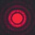

Circular Aperture Diffraction
| 
|
When light from a point source passes through a small circular aperture, it does not produce a bright dot as an image, but rather a diffuse circular disc known as Airy's disc surrounded by much fainter concentric circular rings. This example of diffraction is of great importance because the eye and many optical instruments have circular apertures. If this smearing of the image of the point source is larger that that produced by the aberrations of the system, the imaging process is said to be diffraction-limited, and that is the best that can be done with that size aperture. This limitation on the resolution of images is quantified in terms of the Rayleigh criterion so that the limiting resolution of a system can be calculated.
|
|
Index
Diffraction concepts
Fraunhofer diffraction |